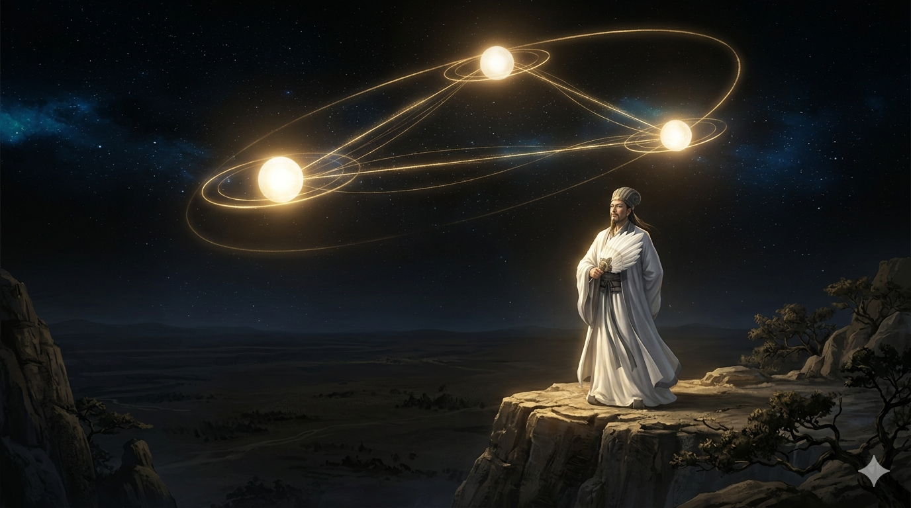
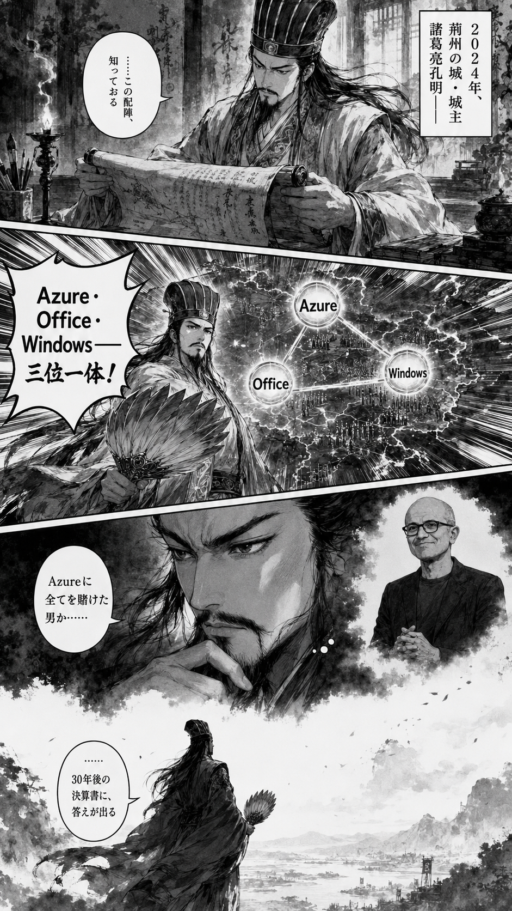

三位一体の荊州城 営業利益率43%・孔明の布陣で天下を統べる
Microsoft FY2024（2024年6月期） ｜ 城主：諸葛亮孔明

最新決算概要（2024年6月期 FY2024）
※最新の数値は Microsoft IR公式サイト でご確認ください
| 項目 | 数値 |
|---|---|
| 売上高 | 約2,450億ドル（前年比+16%） |
| 営業利益率 | 約43%（GAFAM最高水準） |
| FCF | 約740億ドル |
| 自己資本比率 | 約35% |
| CEO | Satya Nadella（サティア・ナデラ） |
決算書の一次情報はここで確認できます
▶ Microsoft IR公式サイト漫画でわかるMicrosoft

- 2024年6月——。決算書を開いた孔明の眼が止まった。Azure・Office・Windows——三事業が独立しながら互いを補強し合っている。かつて隆中の庵で劉備に説いた布陣と、寸分違わぬ形だった。
- 「三位一体の計——荊州・益州・漢中の三地を押さえよ」あの策がデジタルの世界に蘇っていた。孔明は羽扇を静かに開いた。
- ナデラが就任した2014年、Microsoftは時代遅れと笑われた。しかしWindowsを捨てず、Officeを活かし、Azureに全てを賭けた。そこへOpenAIという奇兵が現れた——。
- 孔明は羽扇を静かに収め、遠くを見つめた。「……30年後の決算書に、答えが出る。」荊州の城の向こうに、まだ見ぬ天下が広がっていた。
緻密・三位一体の軍師・孔明、クラウド帝国の設計者・Nadellaに問う
城代・財務アナリストの解説
PL（兵糧）分析
売上高2,450億ドルは前年比+16%。GAFAM5社の中で最も安定した高成長を継続。営業利益率43%はGAFAM最高水準。クラウド（Intelligent Cloud）部門が売上の41%を占め、最も収益性の高い事業へと変貌した。サービス収益（Azure・Microsoft 365）の比率が上昇し、景気循環に強いストック型ビジネスモデルが確立されている。
BS（石垣）分析
自己資本比率35%は大型M&Aの影響もあるが、依然として安定した水準。現金・短期投資は約800億ドル。AAA格付けを維持。2023年のActivision Blizzard買収（750億ドル）が負債を増やしたが、FCFで着実に圧縮中。
CF（堀の水）分析
FCF約740億ドルは世界第2位の水準（Apple・AlphabetとのBIG3）。エンタープライズ向けサブスクリプション収益が安定したキャッシュフローを生む。主な資金使途はAI投資（OpenAI・データセンター）と自社株買い。
注目トピックス
| 軸 | ポイント |
|---|---|
| BS強度 | 強固な財務基盤・AAA格付け |
| CF安定性 | FCF740億ドル・エンタープライズ向け経常収益 |
| PL収益性 | 営利率43%・GAFAM最高水準 |
| 成長性 | Azure+29%・Copilot AI全製品展開 |
城代の総評
Microsoftの強さは「時代を変える能力」にある。Gatewayから離れ、Androidを見送り、クラウドで復活——Nadellaが就任した2014年以降、時価総額は10倍超に達した。FCF740億ドルという弾薬とCopilotというAI軍勢で、企業向けIT市場での覇権は当面揺るがない。唯一の懸念はAI投資の回収タイミング。OpenAIへの巨額投資が実際の収益に結びつくまでの時間軸が長期化すると、投資家の忍耐が試される可能性がある。